Une cycloïde est le lieu d’un point M situé sur un cercle qui roule sans
glisser sur une droite.
Si au départ M est à l’origine O, si le cercle C, de centre A et
rayon R, roule sur l’axe des x, si P est le point de contact de C avec
Ox lorsque C
a tourné d’un angle t, on a :
OP=Rt,AP=−iR et
AM=rotation(A,−t,AP)=−Ri(cos(−t)+isin(−t))=−Rsin(t)−Ricos(t) donc
OM=OP+PA+AM=Rt+iR−Rsin(t)−Ri(cos(t))=R(t−sin(t)+i(1−cos(t)))
L’équation paramétrique d’une cycloïde est donc :
| x=R(t−sin(t)); y=R(1−cos(t)) |
Avec Xcas
On tape :
R:=element(0..5); plotparam(R*(t-sin(t)+i*(1-cos(t))),t,affichage=rouge);
On peut faire une animation pour voir le déplacement d’un point M
d’un cercle C de
rayon R lorsque C roule sur l’axe des x.
On tape :
R:=element(0..5);
plotparam(R*(t-sin(t)+i*(1-cos(t))),t=-10..10,affichage=rouge);
animation(seq('cercle(R*u+i*R,R)',u,-10,10,0.5));
animation(seq('M:=point(R*(u-sin(u)+i*(1-cos(u))))',u,-10,10,0.5));
animation(seq('segment(R*u+i*R,R*(u+i-i*exp(-i*u)))',u,-10,10,0.5));
On peut aussi faire une animation pour voir l’infuence du rayon R, mais
ici, cela n’a pas beaucoup d’interêt.
On tape :
animation(seq('plotparam(R*(t-sin(t)+i*(1-cos(t))),
t=-10..10,affichage=rouge)',R,0,3,0.1));
On peut calculer la longueur d’une arche de cycloïde.
On a :
ds2=dx2+dy2
On tape :
tlin(diff(R*(t-sin(t)),t)^2+diff(R*(1-cos(t)),t)^2)
On obtient :
2*R^2+(-2*R^2)*cos(t)
On tape :
trigsin(halftan(2*R^2+(-2*R^2)*cos(t)))
On obtient :
4*R^2*sin(t/2)^2
Quand t varie de 0 à 2π, la longueur d’une arche de cycloïde est :
normal(int(2*R*sin(t/2),t,0,2*pi))
On obtient :
8*R
Une cycloïde raccourcie est le lieu d’un point P situé sur un rayon AM du
cercle de centre A qui roule sans glisser sur une droite.
Si AP=k*AM=k*R avec k<1, l’équation paramétrique d’une cycloïde
raccourcie est donc :
| x=R(t−k*sin(t)); y=R(1−k*cos(t)) avec k<1 |
Avec Xcas, on tape :
R:=element(0..3); k:=element(0..1); plotparam(R*(t-k*sin(t)+i*(1-k*cos(t))),t,affichage=rouge);
Une cycloïde allongée ou trochoïde est le lieu d’un point Q situé sur le
prolongement du rayon AM du cercle de centre A qui roule sans glisser sur
une droite.
Si AQ=k*AM=k*R avec k>1, l’équation paramétrique d’une cycloïde
allongée donc :
| x=R(t−k*sin(t)); y=R(1−k*cos(t)) avec k>1 |
Avec Xcas, on tape :
R:=element(0..3); k:=element(1..5); plotparam(R*(t-k*sin(t)+i*(1-k*cos(t))),t,affichage=rouge);
On peut faire une animation pour voir le déplacement d’un point M d’un
cercle C de centre A et de rayon R, et d’un point
P du rayon AM lorsque C roule sur l’axe des x.
On tape :
R:=element(0..3);
k:=element(0..5,0.84);
plotparam(R*(t-sin(t)+i*(1-cos(t))),t=-8..8,affichage=rouge);
plotparam(R*(t-k*sin(t)+i*(1-k*cos(t))),t=-8..8,affichage=vert);
animation(seq('cercle(R*u+i*R,R)',u,-8,8,0.5));
animation(seq('M:=point(R*(u-sin(u)+i*(1-cos(u))))',u,-8,8,0.5));
animation(seq('P:=point(R*(u-k*sin(u)+i*(1-k*cos(u))))',u,-8,8,0.5));
animation(seq('segment(R*u+i*R,R*(u+i-i*max(k,1)*exp(-i*u)))',u,-8,8,0.5));
On peut aussi faire une animation pour voir le déplacement d’un point M
d’un cercle C de centre A et de rayon R, d’un point
P du rayon AM et d’un point Q sur le
prolongement du rayon AM lorsque C roule sur l’axe des x.
On tape :
R:=element(0..3);
k:=element(0 .. 1,0.84);
l:=element(1 .. 4,2);
plotparam(R*(t-sin(t)+i*(1-cos(t))),t=-10..10,affichage=rouge);
plotparam(R*(t-k*sin(t)+i*(1-k*cos(t))),t=-10..10,affichage=vert);
plotparam(R*(t-l*sin(t)+i*(1-l*cos(t))),t=-10..10,affichage=bleu);
animation(seq('cercle(R*u+i*R,R)',u,-10,10,0.5));
animation(seq('M:=point(R*(u-sin(u)+i*(1-cos(u))))',u,-10,10,0.5));
animation(seq('P:=point(R*(u-k*sin(u)+i*(1-k*cos(u))))',u,-10,10,0.5));
animation(seq('Q:=point(R*(u-l*sin(u)+i*(1-l*cos(u))))',u,-10,10,0.5));
animation(seq('segment( R*u+i*R, R*(u+i-i*l*exp(-i*u)))',u,-10,10,0.5));
Une épicycloïde est le lieu d’un point M situé sur un cercle C, de
centre A et de rayon R, qui
roule sans glisser sur un cercle C0, de rayon
R0, lorsque C se trouve à l’extérieur de C0.
Si le cercle C0 est de centre O, si au départ M est en I sur Ox,
si P est le point de contact de C avec
C0 lorsque C a tourné d’un angle u, P a tourné d’un angle
t sur C0, on a :
IP=R0t=Ru,
OA=(R+R0)(cos(t)+isin(t))=(R+R0)exp(it),
PA=R(cos(t)+isin(t)),
AM=rotation(A,u,AP)=−R(cos(t)+isin(t))(cos(u)+isin(u))=
−R(cos(u+t)+isin(u+t))=−R(cos((R0/R+1)t)+isin((R0/R+1)t))
On a :
OM=OA+AM=
(R+R0)(exp(it))−Rexp(i(R0/R+1)t)
On pose R0/R+1=m, on a R+R0=Rm.
Donc l’équation paramétrique d’une épicycloïde est :
| x=R(mcos(t)−cos(mt)); y=R(msin(t)−sin(mt)) |
La courbe se referme si 2kπ R0=2nπ R c’est à dire si le rapport R0/R est rationnel.
Cas particuliers
R=R0 on a une cardioïde,
R=R0/2 on a une néphroïde de rebroussement,
Avec Xcas
On tape :
C:=cercle(0,3);
R:=element(0.1..4);
m:=3/R+1;
plotparam(R*m*cos(t)-R*cos(m*t)+i*(R*m*sin(t)-R*sin(m*t)),
t=-10..10,affichage=rouge);
On a choisit R0=3. On peut ainsi faire varier R et voir les 4 cas :
R=1, R=1.5, R=3, R=4.
On peut faire une animation et voir le déplacement d’un point M d’un
cercle C de centre A et de rayon R lorsque ce cercle roule
à l’extérieur d’un cercle C0 de centre 0 et de rayon 3.
On tape :
C:=cercle(0,3);
R:=element(0..5);
m:=3/R+1;
plotparam(R*m*cos(t)-R*cos(m*t)+i*(R*m*sin(t)-R*sin(m*t)),
t=-10..10,affichage=rouge);
animation(seq('cercle((3+R)*exp(i*v),R)',v,-10,10,0.5));
animation(seq('M:=point(R*m*cos(v)-R*cos(m*v)+
i*(R*m*sin(v)-R*sin(m*v)))',v,-10,10,0.5));
Une hypocycloïde est le lieu d’un point M situé sur un cercle C, de
centre A et de rayon R, qui roule sans glisser sur un cercle C0, de
rayon R0>R, lorsque C se trouve à l’intérieur de C0.
On peut changer R en −R dans l’équation d’une épicycloïde ou refaire
les calculs...
Si le cercle C0 est de centre O, si au départ M est en I sur Ox,
si P est le point de contact de C avec
C0 lorsque C a tourné d’un angle u, P a tourné d’un angle
t sur C0, on a :
IP=R0t=−Ru (car u est négatif et R positif),
OA=(R0−R)(cos(t)+isin(t)),
PA=−R(cos(t)+isin(t)),
AM=rotation(A,u,AP)=R(cos(t)+isin(t))(cos(u)+isin(u))=R(cos(u+t)+isin(u+t))=−R(cos((R0/R−1)t)+isin((R0/R−1)t))
On a :
OM=OA+AM=(R0−R)(cos(t)+isin(t))−R(cos((R0/R−1)t)+isin((R0/R−1)t))
Si on pose −R0/R+1=m, l’équation paramétrique d’une hypocycloïde est
donc :
| x=−R(mcos(t)−cos(mt)); y=−R(msin(t)−sin(mt)) |
La courbe se referme si 2kπ R0=2nπ R c’est à dire si le rapport R0/R est rationnel.
Cas particuliers
R=2R0/3 on a une hypocycloïde à 3 rebroussements,
R=R0/4 on a une astroïde.
Avec Xcas
On tape :
C:=cercle(0,3);
R:=element(0..2.9);
m:=-3/R+1;
plotparam(-R*m*cos(t)+R*cos(m*t)+i*(-R*m*sin(t)+R*sin(m*t)),
t,affichage=rouge)
On a choisit R0=3. On peut ainsi faire varier R et voir les 3 cas :
R=0.75, R=1.2, R=2.
On peut faire une animation et voir le déplacement d’un point M
d’un cercle C de centre A et de rayon R lorsque ce cercle
roule à l’intérieur d’un cercle C0 de centre 0 et de rayon
3.
On tape :
C:=cercle(0,3);
R:=element(0..3);
m:=3/R+1;
plotparam(R*m*cos(t)-R*cos(m*t)+i*(R*m*sin(t)-R*sin(m*t)),
t,affichage=rouge);
animation(seq('cercle((3-R)*exp(i*v),R)',v,-10,10,0.5));
animation(seq('M:=point(-R*m*cos(v)+R*cos(m*v)+
i*(-R*m*sin(v)+R*sin(m*v)))',v,-10,10,0.5));
On peut unifier les 2 cas en prenant R négatif pour les hypocycloïde.
Avec Xcas
On tape :
C:=cercle(0,3);
R:=element(-3..4);
m:=3/R+1;
plotparam(R*m*cos(t)-R*cos(m*t)+i*(R*m*sin(t)-R*sin(m*t)),
t=-10..10,affichage=rouge)
On a choisit R0=3. On peut ainsi faire varier R et voir les différents
cas :
R=−1.2, R=−1, R=−0.75, R=1, R=1.5, R=3, R=4.
On peut faire une animation et voir le déplacement d’un point M
d’un cercle C de centre A et de rayon |R| lorsque ce cercle
roule (à l’intérieur si R<0 et à l’extérieur si R>0)
sur le cercle C0 de centre 0 et de rayon 3.
On tape :
C0:=cercle(0,3);
R:=element(-3..4);
m:=3/R+1;
plotparam(R*m*cos(t)-R*cos(m*t)+i*(R*m*sin(t)-R*sin(m*t)),
t=-10..10,affichage=rouge);
animation(seq('cercle((3+R)*exp(i*v),R)',v,-10,10,0.5));
animation(seq('M:=point(R*m*cos(v)-R*cos(m*v)+
i*(R*m*sin(v)-R*sin(m*v)))',v,-10,10,0.5));
animation(seq('segment((3+R)*exp(i*v),R*m*cos(v)-R*cos(m*v)+
i*(R*m*sin(v)-R*sin(m*v)))',v,-10,10,0.5));
On pourra se reporter à la session astroide.xws.
Définition On déplace un segment AB de longueur constante a
de façon que A soit sur 0x et B sur Oy.
L’astroïde est l’enveloppe de ce segment.
L’astroïde est aussi le lieu de la
projection M de C sur AB, lorsque OACB est un rectangle.
Si OACB est un rectangle et si t est l’angle
0x,0C, on a :
0A=acos(t) et
0B=asin(t)
La droite AB a donc comme équation :
x/(acos(t))+y/(asin(t))=1 ou encore
x*tan(t)+y=asin(t)
L’enveloppe de la droite AB est le lieu des points d’intersection de :
x*tan(t)+y=asin(t) et de x/cos(t)2=acos(t)
donc x=acos(t)3 et y=asin(t)−asin(t)*cos(t)2=asin(t)3.
L’astroïde a donc comme équation paramètrique :
x=acos(t)3;y=asin(t)3.
On tape :
plotparam(cos(t)^3+i*sin(t)^3,t)
On peut calculer la longueur d’un quart d’astroïde.
On a : ds2=dx2+dy2
On tape :
tlin(diff(a*cos(t)^3,t)^2+diff(a*sin(t)^3,t)^2)
On obtient :
(9*a^2)/8+(-((9*a^2)/8))*cos(4*t)
On tape :
trigsin(halftan((9*a^2)/8+(-((9*a^2)/8))*cos(4*t)))
On obtient :
9/4*a^2*sin((4*t)/2)^2
Quand t varie de 0 à 2π, la longueur d’un quart d’astroïde est :
normal(int( 3/2*a*sin(2*t),t,0,pi/2))
On obtient :
3/2*a
On a la longueur de l’astroïde est donc :
6*a
Soient un repère orthonormé O,i,jet 2 réels a et b.
Soientt le cercle C de centre J=(a,b) et passant par O et une droite d
passant par O. d coupe C en P. Sur la parraléle à Ox menée par
P, on définit M et N par OM=On=OP.
Le lieu de M et N est un trifolium de paramètres a et b.
On tape :
O:=point(0); supposons(a=[1.0,-5,5,0.1]); supposons(b=[0.5,-5,5,0.1]); C:=cercle(point(2a+i*2b),O); supposons(c=[1.53,(-pi)/2,pi/2,0.01]); P:=inter_unique(C,d,[O]); l:=simplify(tan2sincos(trigcos(trigtan(longueur(O,P))))); M:=P+l; N:=P-l; trace(M); trace(N); m:=simplify(trigcos(trigtan(affixe(M)))); affichage(plotparam(m,c),1);
On obtient :
La valeur de affixe(P) apres simplification :
2*(cos(c)+(i)*sin(c))*(a*cos(c)+b*sin(c))
La valeur de l=longueur(O,P) apres simplification :
2*a*cos(c)+2*b*sin(c)
La valeur l est périodique en c de période 2π et donc selon les
valeurs de a,b,c, l est soit positive soit négative.
et la valeur de m=affixe(M):
2*a*cos(c)^2+2*a*cos(c)+2*b*cos(c)*sin(c)+2*b*sin(c)+
(i)*(2*a*cos(c)*sin(c)-2*b*cos(c)^2+2*b)
m est donc l’affixe de M quand l>0 et l’affixe de N quand l<0.
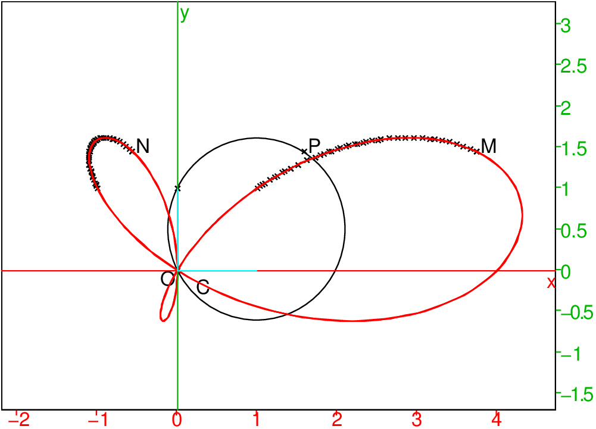
Le plan est muni d’un repère orthonormé O,i,j. Soit C le cercle de centre O et de rayon r.
A tout point M de C on associe le point N de C tel que :
(i,ON)=2(i,OM).
Soit P le symétrique de M par rapport à l’axe des abscisses.
Soit G le centre de gravité du triangle MNP.
Le lieu de G décrit un trifolium qui est une courbe d’équation
paramétrique :
x(t)= a/3(2cos(t)+cos(2t))
y(t)= a/3sin(2t)
On tape (prend r=4) :
C:=cercle(0,4) supposons(a=[0.6,-5,5,0.1]) M:=point(4*exp(i*a)) N:=point(4*exp(2*i*a)) P:=point(4*exp(-i*a)) G:=isobarycentre(M,N,P) lieu(G,a)
On obtient :
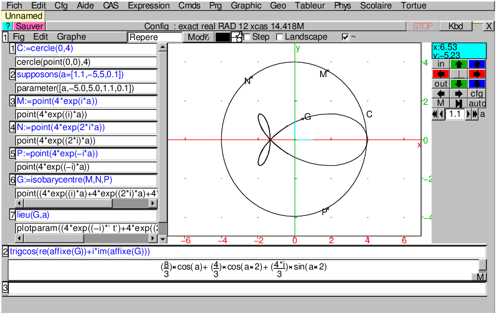
On tape :
Le plan est muni d’un repère orthonormé O,i,j.
Etant donné p un nombre réel, soient la parabole P d’équation
(x+y)2=2b(x−y) et la parabole p d’équation (x−y)2=2b(x+y).
Pour chaque u réel, la droite D d’équation y=tan(u)x coupe P en A
et p en B. Soit M le conjugué harmonique de O par rapport à A et
B. Le lieu de M est un folium de Descartes de paramètre a.
On tape :
supposons(b=[0.375,-5,5,0.005]); P:=parabole((x+y)^2-b*(x-y)); p:=parabole((x-y)^2-b*(x+y)); supposons(u=[0.2,-pi,pi,0.005]); D:=droite(y=tan(u)*x); A:=inter(D,P)[1]; B:=inter(D,p)[1]; M:=conj_harmonique(A,B,point(0)); trace(M); L:=lieu(M,u):;affichage(L,1);
On obtient :
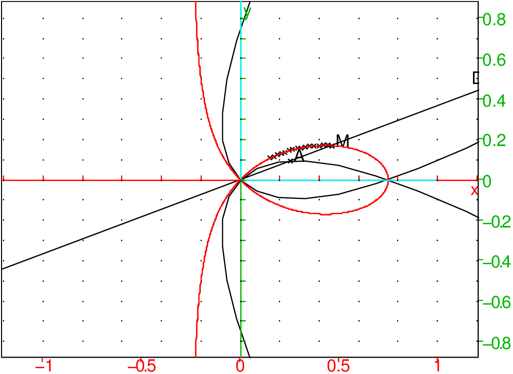
^3-b*tan(u)^2+i*b*tan(u)+b)/(3*tan(u)^2+1)
On tape :^2+1)*sqrt(tan(u)^2+1)*b)/(3*tan(u)^2+1)
Le folium de Descartes a donc comme équation polaire :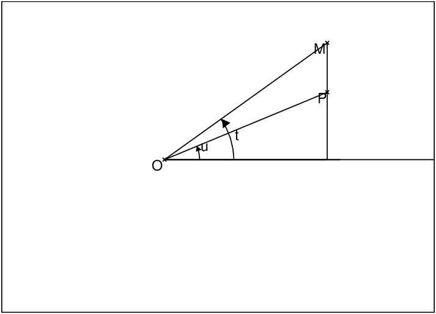
^2)/cos(u)/(1+3*tan(u)^2),u)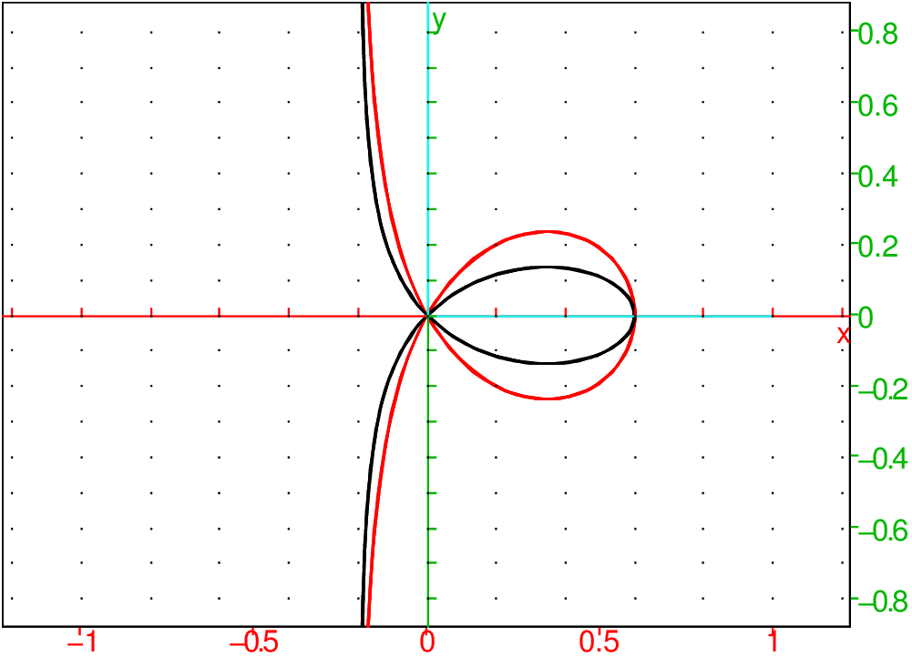
La trisectrice de Mac-Laurin de paramètre a est la courbe d’équation
paramétrique :
x(t):=a3−t2/t2+1
y(t):=at(3−t2)/t2+1
Tracer sa représentation paramétrique et calculer l’aire de la boucle.
Cette courbe a été étudié par Mac-Laurin vers 1742.
C’est une cubique circulaire unicursale.
La boucle est obtenue pour t∈ [−√3,√3].
On tape dans un niveau de géométrie :
supposons(a=[-1.0,-5,5,0.1])
plotparam((3-t^2)*(1+i*t)/(t^2+1))
On obtient pour a=−1 :
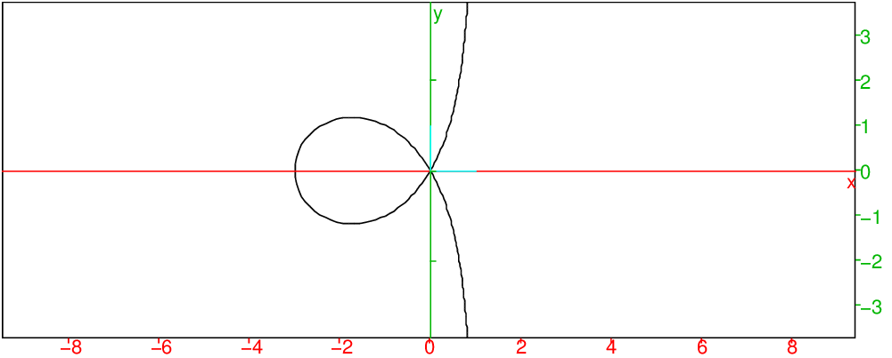
^2)/(t^2+1)diff(a*(3-t^2)/(t^2+1),t),t,sqrt(3),0)
On obtient : 3*sqrt(3)*a^2
On peur donner de cette courbe a plusieurs constructions géométriques.
En voici :
Soit a un nombre réel.
Dans un repère orthonormé O,i,j, on
considère une droite d et les points :
A(2a,0), S(3a,0).
Soit P le point de d d’angle polaire t défini par OP=PA et soit M le point de d
défini par AM=AP.
Quel est le lieu de M ?
Dans un niveau de géométrie, on tape :
supposons(a=[1.0,-5,5,0.1]); supposons(t=[0.5,-5,5,0.1]); A:=point(2a); S:=point(3a); P:=point(a+i*a*tan(t)); O:=point(0); d:=droite(y=tan(t)*x):;d; M:=point(2a+a/cos(t)*exp(3*i*t)); trace(M); triangle(A,P,M); angle(O,A,P,"t");
On obtient selon les valeurs de t et pour a=1 :
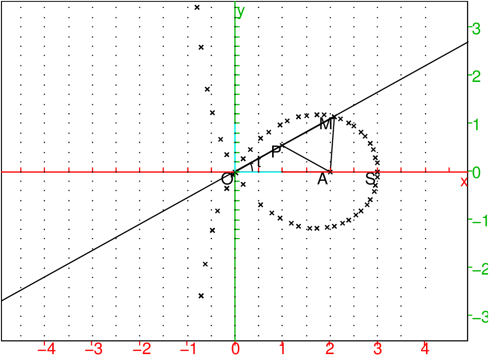
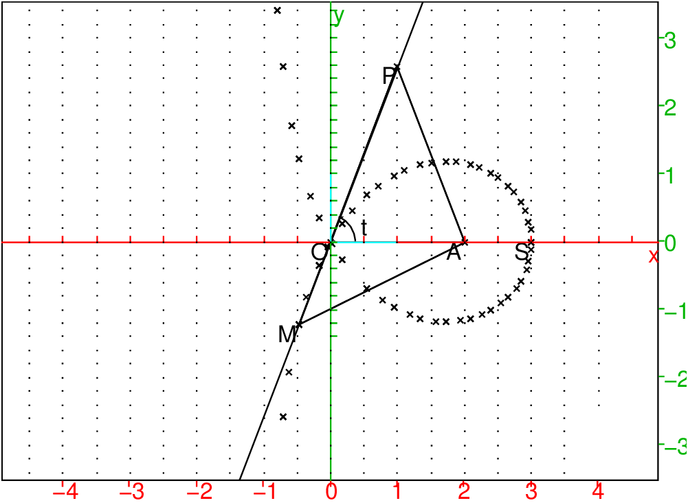
^2)
en tapant :^2+yM^2)-a*(3*xM^2-yM^2))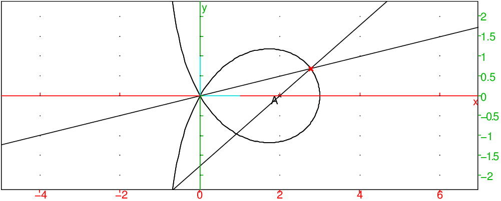
supposons(a=[1.3,0,5,0.1]); p:=plotparam(3a+(t^2)/(4*a)+(i)*t,t=-10.0..10.0); supposons(t=[-9.0,-10,10,0.2]); T:=mediatrice(point(4a),point(2a+i*t)); M:=projection(T,point(0));; trace(M); segment(0,M); O:=point(0);
On obtient :
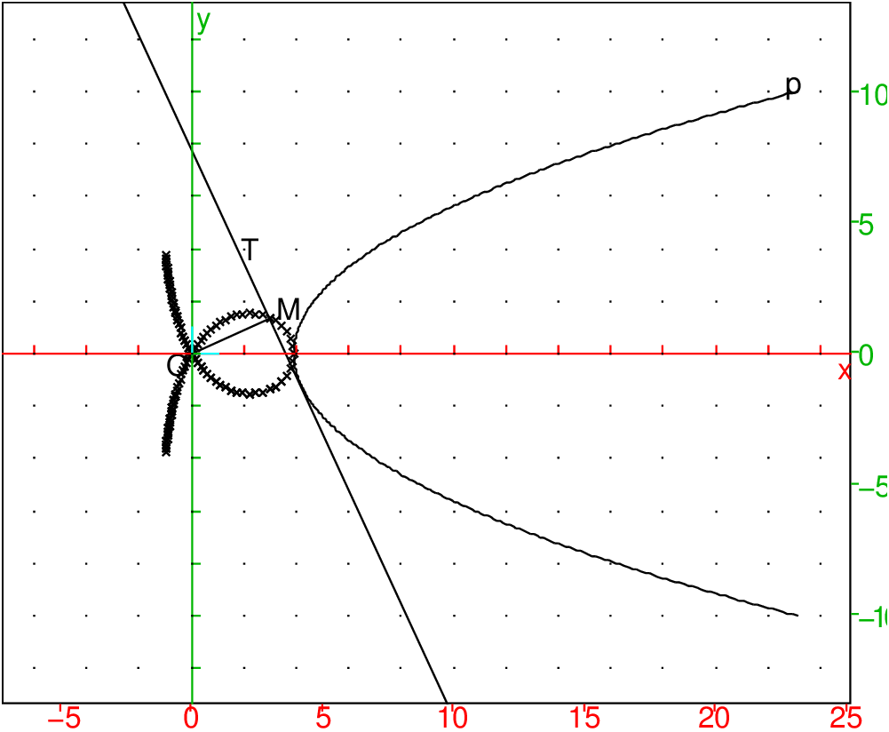
Pour faire une animation, on tape dans un même niveau :^2)/(4)+(i)*t,t=-10.0..10.0);supposons(a=[1.3,0,5,0.1]); p:=plotparam(3a+(t^2)/(4*a)+(i)*t,t=-10.0..10.0); cercle(4*a,4*a); D:=droite(x=-2a); supposons(t=[-9.0,-10,10,0.2]); d:=droite(y=tan(t)*x):;d P:=point(8a*cos(t)*exp(i*t)); Q:=point(-2a*(1+i*tan(t))); M:=milieu(P,Q); trace(M); O:=point(0);
On obtient :
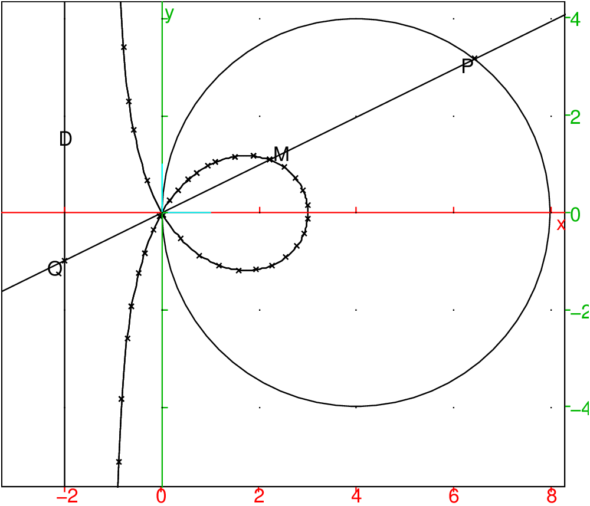
On considère la fonction g ℝ−>ℂ définie par : g(t)=∑n=0+∞ei2nt/2n
^n*t)/2^n,n=0..20)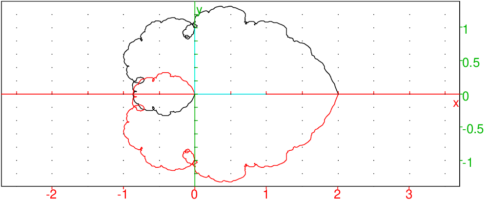